Raspberry Pi 3 NAS Server Config
Samba configuration showcase — turning a Raspberry Pi 3 into a lightweight, low-power NAS for the MTPortfolio lab network.
1Overview
The Raspberry Pi 3 NAS serves as a lightweight, low-power network attached storage device within the MTPortfolio lab environment. It provides centralized file storage and backup capabilities accessible to all devices across the network via SMB/CIFS file sharing.
Rather than deploying a full NAS platform such as OpenMediaVault or TrueNAS on this device, a manual Samba configuration was chosen to keep the setup lightweight and demonstrate foundational Linux networking and file sharing skills.
2Hardware & Software
| Component | Details |
|---|---|
| Hardware | Raspberry Pi 3 Model B |
| Operating System | Raspbian GNU/Linux 10 (Buster) |
| NAS Software | Samba 2.4.9 (SMB/CIFS) |
| File Services | smbd (SMB Daemon), nmbd (NetBIOS Name Daemon) |
| Storage | 28GB drive mounted at /mnt/nasdrive |
| Network Interface | eth0 (wired Ethernet) |
| Switch Port | 2950 (Switch001) Fa0/5 |
| VLAN | VLAN 10 — Servers (192.168.10.0/24) |
3Network / IP Configuration
The Pi 3 NAS is assigned a static IP address on VLAN 10 (Servers) to ensure it is always reachable at a predictable address. Static assignment is required for NAS devices since clients map network drives by IP or hostname.
| Setting | Value |
|---|---|
| IP Address | 192.168.10.20 |
| Subnet Mask | 255.255.255.0 (/24) |
| Default Gateway | 192.168.10.1 (3550 VLAN 10 SVI) |
| Primary DNS | 192.168.10.5 (Raspberry Pi 5 DNS) |
| Secondary DNS | 192.168.20.10 (Windows Server DC) |
4How It Was Configured
4.1 Operating System
Raspbian Buster was flashed to the Pi 3's SD card using Raspberry Pi Imager. SSH was enabled via a blank ssh file placed in the /boot partition, allowing headless management from the desktop.
4.2 Samba Installation
Samba was installed from the Raspbian package repository and configured to share the mounted NAS drive with appropriate permissions for network access:
sudo apt update && sudo apt upgrade -y
sudo apt install samba samba-common-bin -y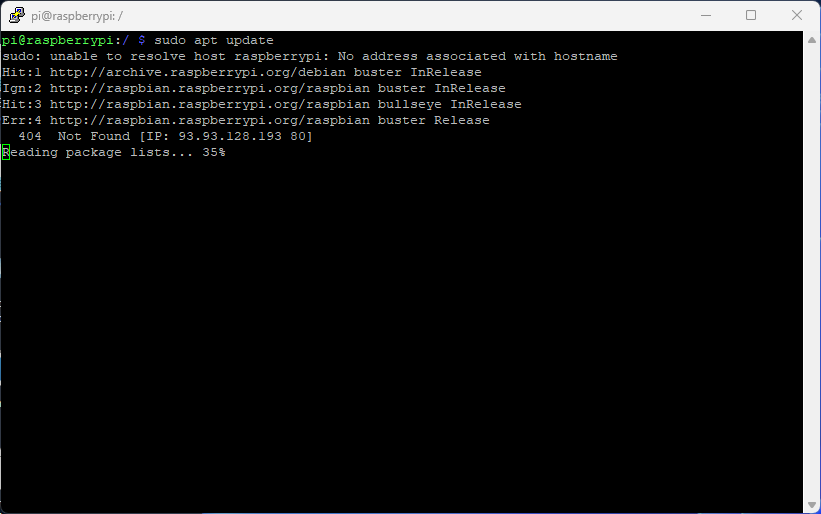

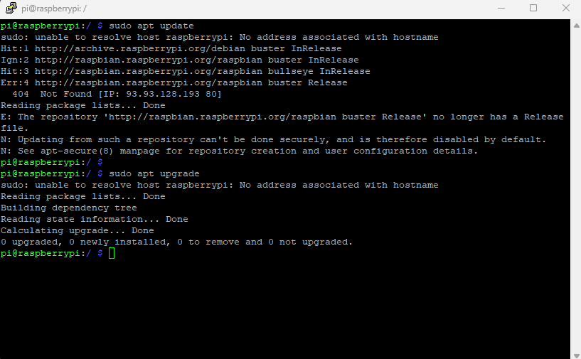
4.3 Drive Mounting
The NAS drive was formatted and mounted at /mnt/nasdrive, with the mount made persistent across reboots via /etc/fstab:
sudo mkdir -p /mnt/nasdrive
sudo mount /dev/sda1 /mnt/nasdrive
# Add to /etc/fstab for persistence:
/dev/sda1 /mnt/nasdrive ext4 defaults 0 2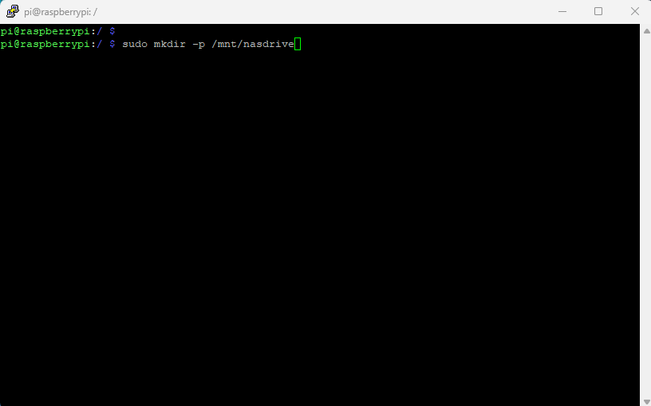
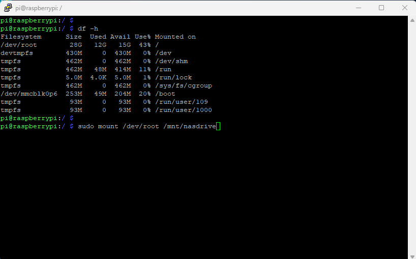
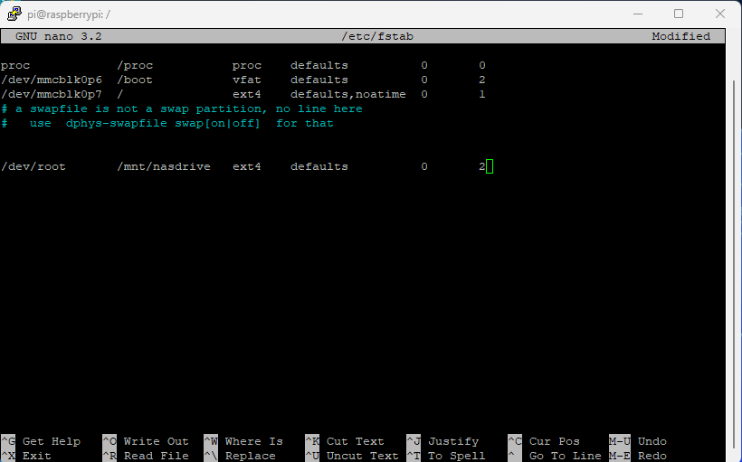
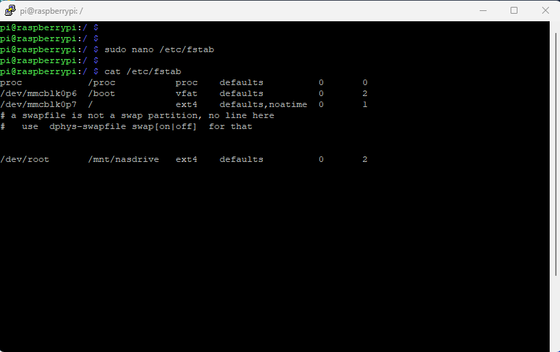
4.4 Samba Share Configuration
The Samba config file was edited to define the shared folder:
sudo nano /etc/samba/smb.conf
# Add to bottom of smb.conf:
[NAS]
path = /mnt/nasdrive
browseable = yes
writeable = yes
only guest = no
create mask = 0777
directory mask = 0777
public = no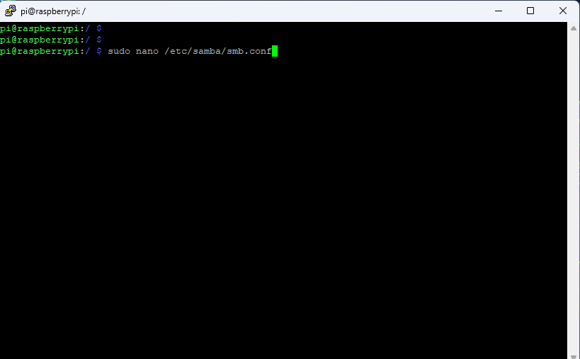
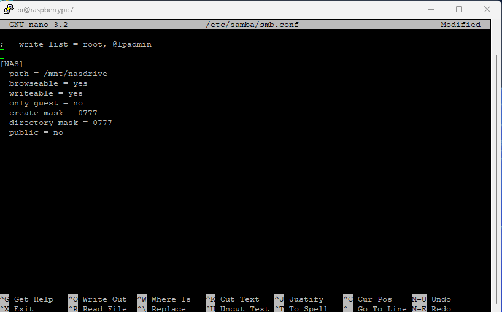
Samba services were then enabled and started:
sudo systemctl enable smbd nmbd
sudo systemctl start smbd nmbd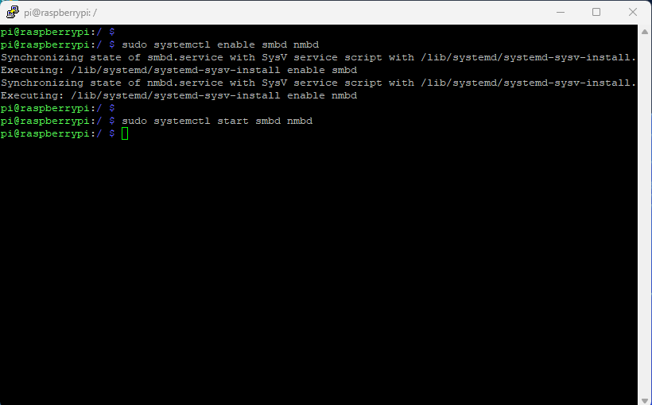
5VLAN Integration — Commands to Run
These commands integrate the Pi 3 NAS into the MTPortfolio VLAN infrastructure. They configure the static IP on the network interface to place the device correctly on VLAN 10.
5.1 Set Static IP via dhcpcd
sudo nano /etc/dhcpcd.conf
# Add to the bottom of the file:
interface eth0
static ip_address=192.168.10.20/24
static routers=192.168.10.1
static domain_name_servers=192.168.10.5 192.168.20.10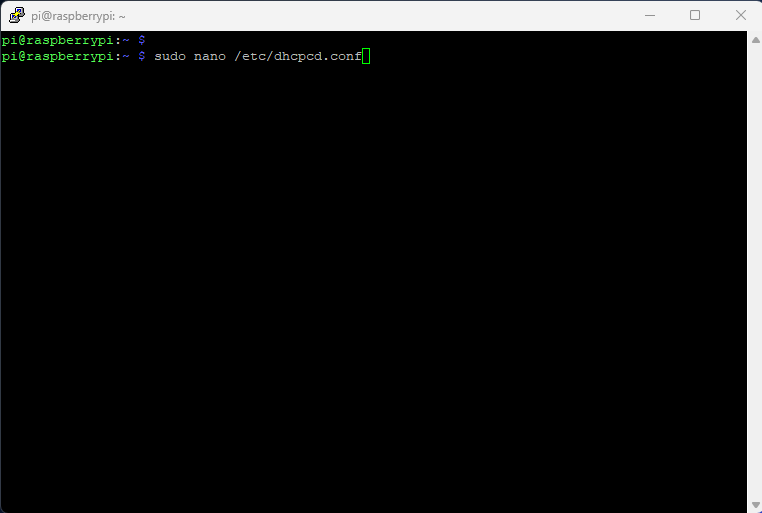
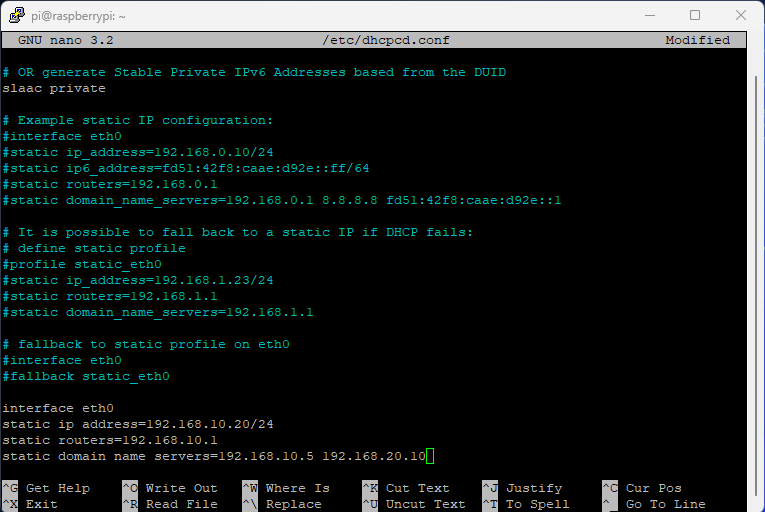
5.2 Restart Networking
sudo systemctl restart dhcpcd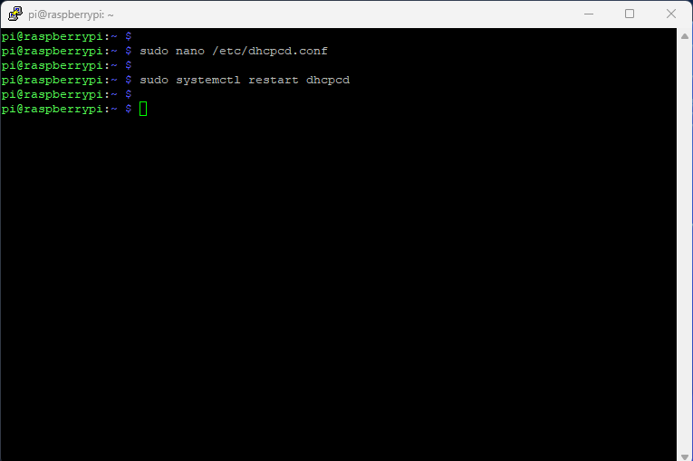
5.3 Verify IP Configuration
ip addr show eth0
ip route show
ping 192.168.10.1 # ping gateway
ping 192.168.20.10 # ping Windows Server DC5.4 Verify Samba Services Still Running
sudo systemctl status smbd
sudo systemctl status nmbd5.5 Verify Share Is Accessible
From a Windows client on the network, open Run (Win+R) and enter:
\\192.168.10.20\NASYou should be prompted for Samba credentials and then see the NAS share contents.
6Service Status Reference
Use these commands at any time to check the health of the NAS:
| Command | Purpose |
|---|---|
sudo systemctl status smbd | Check SMB file sharing daemon |
sudo systemctl status nmbd | Check NetBIOS name daemon |
df -h | Check disk usage on NAS drive |
ip addr show eth0 | Verify current IP address |
ping 192.168.10.1 | Test gateway connectivity |
sudo smbstatus | Show active Samba connections |
cat /etc/samba/smb.conf | Review Samba configuration |